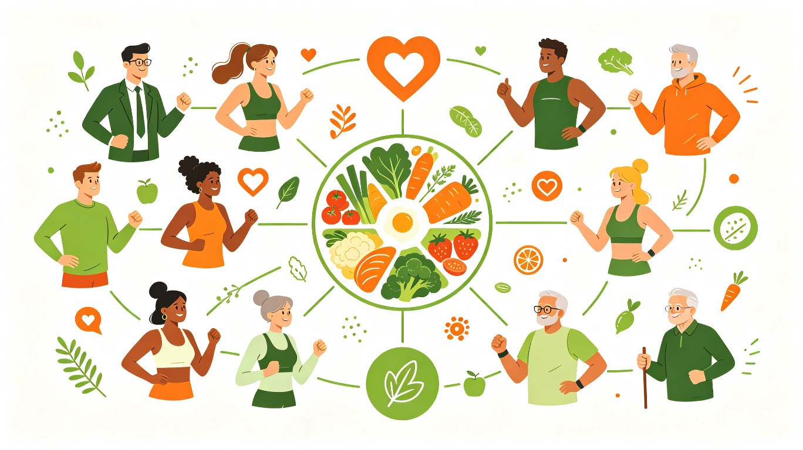
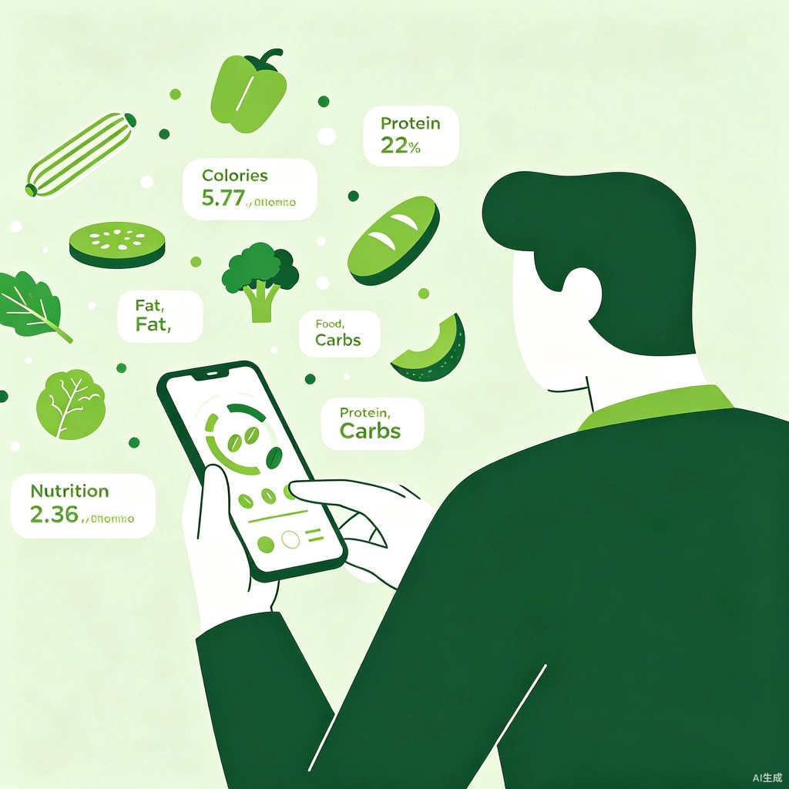
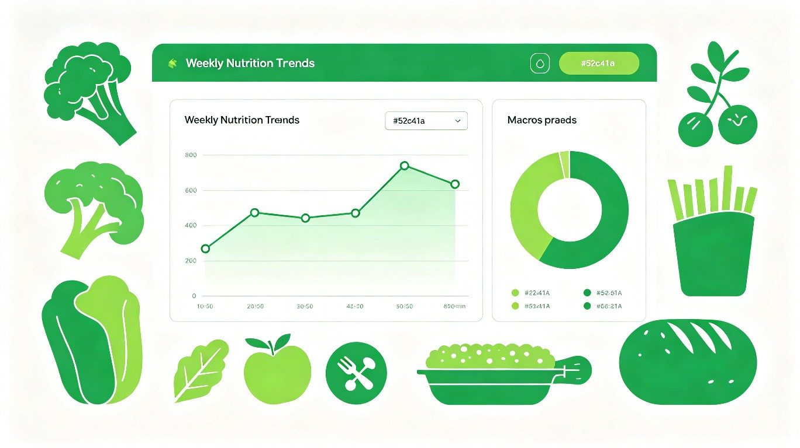

一、创意名称与介绍
产品名称：食光记账
「食光记账」是一款基于 Web 的智能饮食追踪与健康管理系统，帮助用户轻松记录每日饮食、实时追踪营养摄入，并根据个人健康目标提供数据驱动的饮食建议。
想解决什么问题
健康饮食的意识正在全民觉醒，但绝大多数人无法坚持记录自己每天吃了什么。传统饮食记录方式（手动输入、查找食物数据库、计算卡路里）过于繁琐，每次记录需要 3-5 分钟，用户往往在尝试几天后就放弃。这导致一个普遍困境：想健康饮食，却缺乏持续的自我监控工具。
为什么会想到做这个
灵感来源于身边的真实场景——健身的朋友抱怨「每次记录饮食比训练还累」，减肥的同事说「坚持了三天就不想记了」。我们意识到，核心问题不是人们不想管理饮食，而是现有工具的使用门槛太高。如果能将记录流程压缩到 30 秒以内，并通过可视化让用户直观看到自己的营养数据，就能让饮食管理像刷手机一样自然。
大概是什么产品
一款响应式 Web 网站，用户通过浏览器即可使用。内置丰富的中国食物数据库，支持快速搜索、一键记录、营养仪表盘、趋势分析和健康目标管理。技术栈采用 React + Java Spring Boot + MySQL，前后端分离架构，可部署在任意云服务上。
二、目标用户及痛点
面向哪些用户
核心用户群体包括四类人群：
健身增肌人群
需要精确追踪蛋白质、碳水和脂肪的摄入比例，确保营养达标以支撑训练效果。
减脂塑形人群
需要控制每日总热量摄入，了解每餐的营养构成，避免"隐形热量"导致减脂失败。
关注健康的上班族
久坐办公、外卖频繁，希望改善饮食结构，增加蔬果摄入，减少高油高盐食物。
慢病管理人群
如糖尿病前期、高血压患者，需要监控碳水、钠盐等特定营养素的每日摄入。

在什么场景下使用
餐后即时记录：刚吃完午饭，打开网站搜索"番茄炒蛋"，选择克数，一键记录——全程不超过 30 秒。
周末复盘：打开历史记录页面，查看本周的营养摄入趋势图，了解自己哪天吃得最健康、哪天超标了。
制定计划：在个人中心设定"减脂"目标和每日 1800 千卡的热量上限，系统自动计算各营养素的每日目标值。
当前痛点
记录太麻烦
现有 App 需要手动输入食物名称、查找数据库、选择份量、确认——一顿饭记录完往往花了 5 分钟，难以养成习惯。
中国食物数据不足
主流饮食记录工具（MyFitnessPal、薄荷健康）对中国家常菜的覆盖有限，"宫保鸡丁""番茄炒蛋"等常见菜品要么找不到，要么数据不准确。
缺乏直观反馈
用户记录完数据后只能看到干巴巴的数字，没有趋势图、没有对比分析，数据对行为改变几乎没有帮助。
目标管理缺失
大多数工具只记录不分析，无法根据用户的健康目标（减脂/增肌/维持）自动推荐营养素摄入目标并追踪完成进度。
三、核心功能设计
快速搜索与记录
内置 22+ 种常见中国食物数据库，支持关键词搜索和分类筛选，搜索后选择食物、输入克数、选择餐类型，三步完成记录。
营养仪表盘
首页实时展示今日卡路里、蛋白质、脂肪、碳水四大指标，带目标进度条，一眼看出当日摄入是否达标。
趋势分析与可视化
7 天卡路里摄入折线图、日期范围内营养对比柱状图，帮助用户发现饮食规律和异常波动。
健康目标管理
支持减脂/增肌/维持/均衡饮食四种模式，自动计算每日营养素目标值，持续追踪完成进度。


系统架构
flowchart TB
subgraph 前端 ["React 前端 (localhost:3000)"]
A[登录 / 注册] --> B[仪表盘]
B --> C[历史记录]
B --> D[食物库]
B --> E[个人中心]
end
subgraph 后端 ["Java Spring Boot 后端 (localhost:8080)"]
F[UserController] --> G[FoodController]
G --> H[MealRecordController]
H --> I[HealthGoalController]
F --> J[Service 层]
G --> J
H --> J
I --> J
J --> K[MyBatis-Plus Mapper]
end
subgraph 数据层 ["MySQL 数据库"]
L[(user)]
M[(food)]
N[(meal_record)]
O[(health_goal)]
end
前端 -- "REST API / Axios" --> 后端
K --> L
K --> M
K --> N
K --> O
四、价值与意义
效率提升：让饮食记录从 5 分钟变成 30 秒
传统饮食记录方式的痛点在于操作路径过长。食光记账通过内置中国食物数据库（覆盖米饭、红烧肉、番茄炒蛋等家常菜）和三步记录流程（搜索 → 选量 → 记录），将单次记录时间压缩到 30 秒以内。首页仪表盘提供即时营养反馈，用户无需额外操作即可看到当日摄入是否达标。低门槛 = 高坚持率，这正是现有工具做不到的。
社会价值：助力全民健康饮食意识提升
中国居民超重率和肥胖率持续攀升，《中国居民营养与慢性病状况报告》显示成人超重率已超 50%。而饮食管理是慢性病防控的第一道防线。食光记账作为零门槛的 Web 工具，不要求用户下载安装 App，打开浏览器即可使用。通过可视化营养数据和趋势分析，帮助用户建立「吃得明白」的健康意识，从每一次记录开始改善饮食习惯，长远来看对降低慢性病发病率具有积极意义。
五、技术实现方案
前端技术栈
基于 Vite 8 + React 19 + TypeScript 构建，UI 组件库选用 Ant Design 6（绿色主题定制），数据可视化使用 Recharts（7 天趋势折线图、营养对比柱状图），HTTP 请求通过 Axios 与后端 REST API 通信。路由采用 React Router v7，登录状态通过 localStorage + Axios 拦截器管理。
后端技术栈
基于 Java 17 + Spring Boot 3.2 构建 RESTful API，ORM 层使用 MyBatis-Plus 3.5 简化数据库操作。后端分为 Controller → Service → Mapper 三层架构，统一响应格式 ApiResponse，全局异常处理，CORS 跨域配置支持前端开发调试。数据库为 MySQL 8.0，UTF8MB4 字符集完整支持中文。
数据库设计
共设计 4 张核心业务表：
| 表名 | 用途 | 关键字段 |
|---|---|---|
| user | 用户信息 | username, nickname, daily_calorie_target |
| food | 食物数据库 | name, category, calories_per_100g, protein, fat, carbs |
| meal_record | 餐食记录 | user_id, food_id, meal_type, portion, record_date |
| health_goal | 健康目标 | user_id, goal_type, target_calories/protein/fat/carbs, status |
API 接口设计
后端共提供 16 个 RESTful API 接口，覆盖用户管理、食物搜索、饮食记录、健康目标四大模块：
| 模块 | 接口 | 说明 |
|---|---|---|
| 用户 | POST /api/users/register | 注册新用户 |
POST /api/users/login | 用户登录 | |
GET /api/users/{id}/nutrition/daily | 每日营养汇总 | |
| 食物 | GET /api/foods/search | 搜索食物 |
GET /api/foods/categories | 获取食物分类 | |
| 记录 | POST /api/meal-records | 添加饮食记录 |
GET /api/meal-records/range | 日期范围查询 | |
GET /api/meal-records/nutrition-stats | 营养统计 | |
| 目标 | POST /api/health-goals | 创建健康目标 |
六、项目源码
本项目由两个子项目组成，均已完成开发且前端构建验证通过：
后端源码
food-tracker-backend/
Java Spring Boot 3.2 + MyBatis-Plus，含 30+ 源文件、4 张业务表、22 种示例食物数据。
前端源码
food-tracker-frontend/
React 19 + TypeScript + Ant Design 6，含 5 个页面、Recharts 可视化，TypeScript 编译通过。